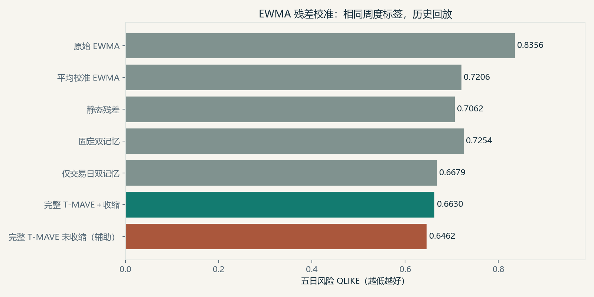
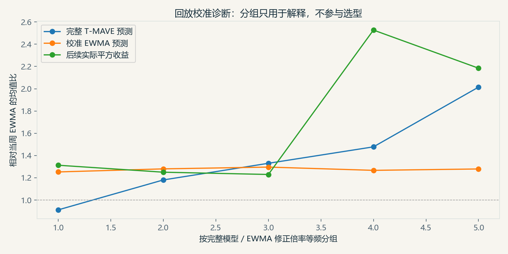
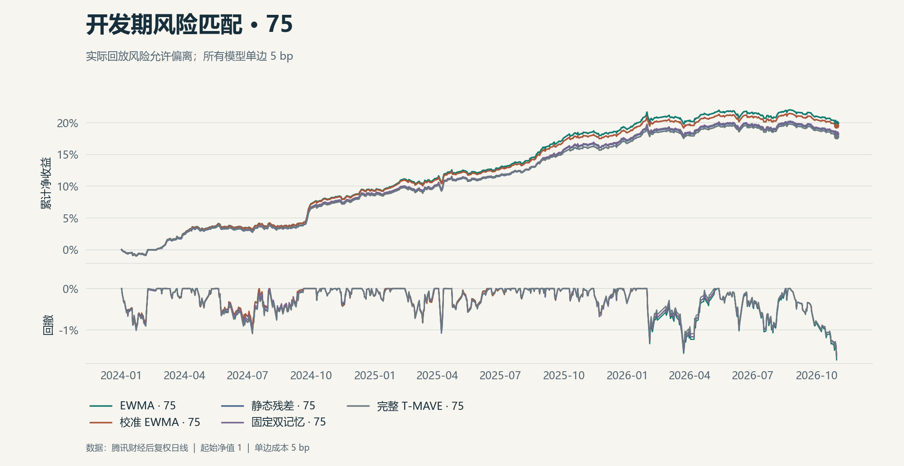
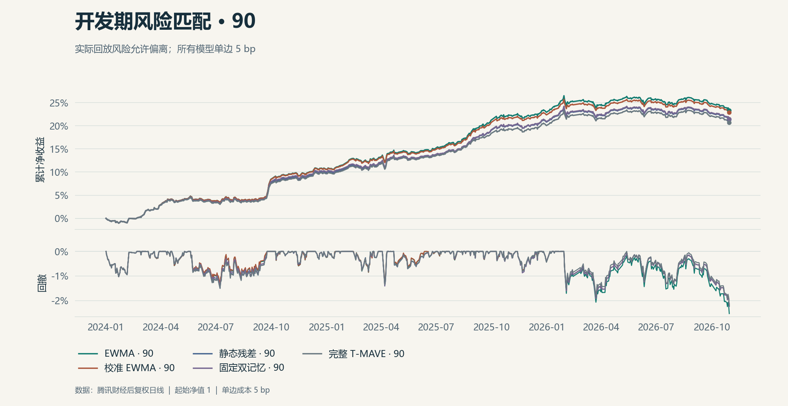

2026-11-16 19:06 北京时间。2015–2017 形成事件参数，2018 年起向前训练，2021–2023 开发，2024–2026 为已查看历史回放。新独立期为 0 日。
主结果：QLIKE 从 0.8356 到 0.6630，相对原始 / 校准 EWMA 的降幅为 20.7% / 8.0%。年度方向另见 annual_comparisons.csv；是否支持机制增量和经济优势，分别看下方配对检验与账户结果，不能从预测点估计直接推出。
第二阶段完整模型同时记住原价格压力与已经兑现的五日高估/低估误差，各含快状态与慢锚点，并保留三时钟、确认门控及先流动后写入。收缩只使用此前三年已结束的向前预测；gamma=0 精确回到校准 EWMA。首轮绝对损失 one-SE 将记忆全部收缩为零，第二阶段改为成对损失 one-SE 并结合两种状态；属于看过首轮后的探索性迭代。
两倍低估次数：原始 EWMA 27/145，完整候选 16/145；两倍高估次数分别为 45/145、56/145。绝对对数误差及各时钟消融也一并列出，不以某一种损失改善替代全面检验。

| phase | subset | model | weeks | sparse | qlike | mean_actual_over_forecast | underestimate_twice | overestimate_twice | mae_log_ratio |
|---|---|---|---|---|---|---|---|---|---|
| replay | all | ewma | 145 | False | 0.8356 | 1.7010 | 0.1862 | 0.3103 | 0.8614 |
| replay | all | calibrated | 145 | False | 0.7206 | 1.3439 | 0.1379 | 0.4069 | 0.9166 |
| replay | all | static_raw | 145 | False | 0.7262 | 1.3777 | 0.1655 | 0.3862 | 0.8970 |
| replay | all | static_shrunk | 145 | False | 0.7206 | 1.3439 | 0.1379 | 0.4069 | 0.9166 |
| replay | all | static_paired | 145 | False | 0.7403 | 1.3813 | 0.1655 | 0.3862 | 0.9032 |
| replay | all | fixed_raw | 145 | False | 0.7197 | 1.3610 | 0.1517 | 0.3931 | 0.9020 |
| replay | all | fixed_shrunk | 145 | False | 0.7206 | 1.3439 | 0.1379 | 0.4069 | 0.9166 |
| replay | all | fixed_paired | 145 | False | 0.7379 | 1.3643 | 0.1448 | 0.3931 | 0.9126 |
| replay | all | trade_raw | 145 | False | 0.7108 | 1.3410 | 0.1586 | 0.4000 | 0.8984 |
| replay | all | trade_shrunk | 145 | False | 0.7206 | 1.3439 | 0.1379 | 0.4069 | 0.9166 |
| replay | all | trade_paired | 145 | False | 0.7338 | 1.3679 | 0.1586 | 0.3931 | 0.9012 |
| replay | all | natural_raw | 145 | False | 0.7111 | 1.3423 | 0.1586 | 0.4000 | 0.8978 |
| replay | all | natural_shrunk | 145 | False | 0.7206 | 1.3439 | 0.1379 | 0.4069 | 0.9166 |
| replay | all | natural_paired | 145 | False | 0.7344 | 1.3689 | 0.1586 | 0.3931 | 0.9010 |
| replay | all | event_raw | 145 | False | 0.7049 | 1.3336 | 0.1586 | 0.4069 | 0.8972 |
| replay | all | event_shrunk | 145 | False | 0.7206 | 1.3439 | 0.1379 | 0.4069 | 0.9166 |
| replay | all | event_paired | 145 | False | 0.7279 | 1.3624 | 0.1586 | 0.4000 | 0.8995 |
| replay | all | full_raw | 145 | False | 0.7049 | 1.3345 | 0.1586 | 0.4069 | 0.8967 |
| replay | all | full_shrunk | 145 | False | 0.7206 | 1.3439 | 0.1379 | 0.4069 | 0.9166 |
| replay | all | full_paired | 145 | False | 0.7283 | 1.3629 | 0.1586 | 0.4000 | 0.8993 |
| replay | all | price_raw | 145 | False | 0.6612 | 1.2786 | 0.1448 | 0.3931 | 0.8976 |
| replay | all | price_shrunk | 145 | False | 0.7206 | 1.3439 | 0.1379 | 0.4069 | 0.9166 |
| replay | all | price_paired | 145 | False | 0.6675 | 1.2720 | 0.1379 | 0.4000 | 0.9000 |
| replay | all | joint_static_raw | 145 | False | 0.6856 | 1.3005 | 0.1379 | 0.4000 | 0.9072 |
| replay | all | joint_static_shrunk | 145 | False | 0.7206 | 1.3439 | 0.1379 | 0.4069 | 0.9166 |
| replay | all | joint_static_paired | 145 | False | 0.7062 | 1.3024 | 0.1310 | 0.4000 | 0.9120 |
| replay | all | joint_fixed_raw | 145 | False | 0.7030 | 1.3149 | 0.1310 | 0.3931 | 0.9147 |
| replay | all | joint_fixed_shrunk | 145 | False | 0.7206 | 1.3439 | 0.1379 | 0.4069 | 0.9166 |
| replay | all | joint_fixed_paired | 145 | False | 0.7254 | 1.3152 | 0.1172 | 0.4069 | 0.9226 |
| replay | all | joint_trade_raw | 145 | False | 0.6520 | 1.2416 | 0.1172 | 0.3862 | 0.9008 |
| replay | all | joint_trade_shrunk | 145 | False | 0.7206 | 1.3439 | 0.1379 | 0.4069 | 0.9166 |
| replay | all | joint_trade_paired | 145 | False | 0.6679 | 1.2482 | 0.1103 | 0.3862 | 0.9052 |
| replay | all | joint_natural_raw | 145 | False | 0.6558 | 1.2467 | 0.1172 | 0.3862 | 0.9005 |
| replay | all | joint_natural_shrunk | 145 | False | 0.7206 | 1.3439 | 0.1379 | 0.4069 | 0.9166 |
| replay | all | joint_natural_paired | 145 | False | 0.6816 | 1.2602 | 0.1103 | 0.3931 | 0.9076 |
| replay | all | joint_event_raw | 145 | False | 0.6433 | 1.2299 | 0.1172 | 0.3862 | 0.8986 |
| replay | all | joint_event_shrunk | 145 | False | 0.7206 | 1.3439 | 0.1379 | 0.4069 | 0.9166 |
| replay | all | joint_event_paired | 145 | False | 0.6521 | 1.2331 | 0.1103 | 0.3862 | 0.9004 |
| replay | all | joint_full_raw | 145 | False | 0.6462 | 1.2338 | 0.1172 | 0.3862 | 0.8985 |
| replay | all | joint_full_shrunk | 145 | False | 0.7206 | 1.3439 | 0.1379 | 0.4069 | 0.9166 |
| replay | all | joint_full_paired | 145 | False | 0.6630 | 1.2422 | 0.1103 | 0.3862 | 0.9029 |
按已生成预测的修正倍率做事后五分位展示，不是筛选情景、训练规则或独立显著性证据；后续平方收益只是方差的噪声代理。

正差表示完整收缩模型的 QLIKE 更低。Holm 校正五个对照；全部为探索性检验。
| phase | benchmark | block_weeks | difference | lower | upper | p_raw | p_holm |
|---|---|---|---|---|---|---|---|
| replay | ewma | 4 | 0.17256 | -0.00616 | 0.39710 | 0.09945 | 0.37481 |
| replay | calibrated | 4 | 0.05764 | -0.05807 | 0.18977 | 0.36032 | 0.47676 |
| replay | joint_static_paired | 4 | 0.04324 | -0.00543 | 0.08966 | 0.08096 | 0.37481 |
| replay | joint_fixed_paired | 4 | 0.06240 | -0.00077 | 0.13436 | 0.07496 | 0.37481 |
| replay | joint_trade_paired | 4 | 0.00486 | -0.00204 | 0.01441 | 0.23838 | 0.47676 |
匹配常数只在开发期求解；回放期风险仍可能不同，不应解释成精确相同的未来风险。
| strategy | cagr | annual_vol | max_drawdown | cdar95 |
|---|---|---|---|---|
| matched_ewma_75 | 6.9397% | 2.4991% | -1.7205% | 1.1990% |
| matched_calibrated_75 | 6.7907% | 2.4284% | -1.6286% | 1.1384% |
| matched_joint_static_paired_75 | 6.3542% | 2.4182% | -1.6286% | 1.1474% |
| matched_joint_fixed_paired_75 | 6.3925% | 2.4234% | -1.6286% | 1.1460% |
| matched_joint_full_paired_75 | 6.2446% | 2.3786% | -1.6561% | 1.1206% |
| matched_ewma_90 | 8.0315% | 3.0946% | -2.5268% | 1.7393% |
| matched_calibrated_90 | 7.9038% | 2.9849% | -2.2274% | 1.5391% |
| matched_joint_static_paired_90 | 7.3958% | 2.9575% | -2.2274% | 1.5487% |
| matched_joint_fixed_paired_90 | 7.4324% | 2.9668% | -2.2274% | 1.5464% |
| matched_joint_full_paired_90 | 7.1879% | 2.8844% | -2.1862% | 1.4808% |


annual_comparisons.csv · coefficients.csv · correction_quantiles.csv · daily_backtest.csv · economic_tests.csv · forecast_losses.csv · forecast_scores.csv · forecast_tests.csv · portfolio_metrics.csv · risk_calibration.csv · shrinkage.csv · tmave_error_states.csv · train_folds.csv · weekly_forecasts.csv · audit.json · manifest.json